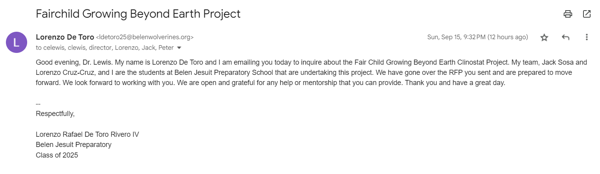
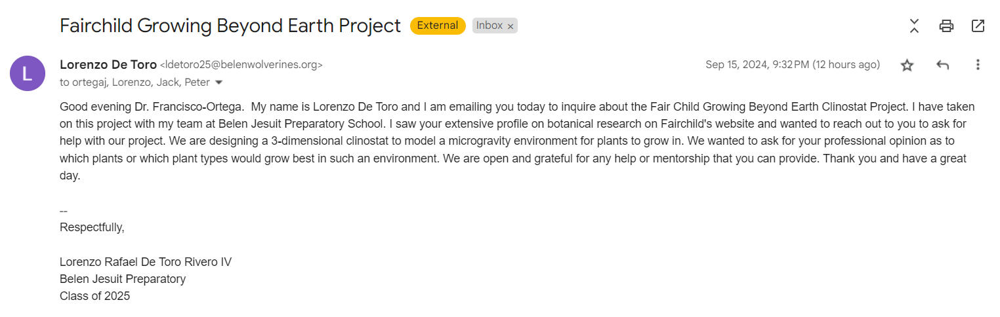
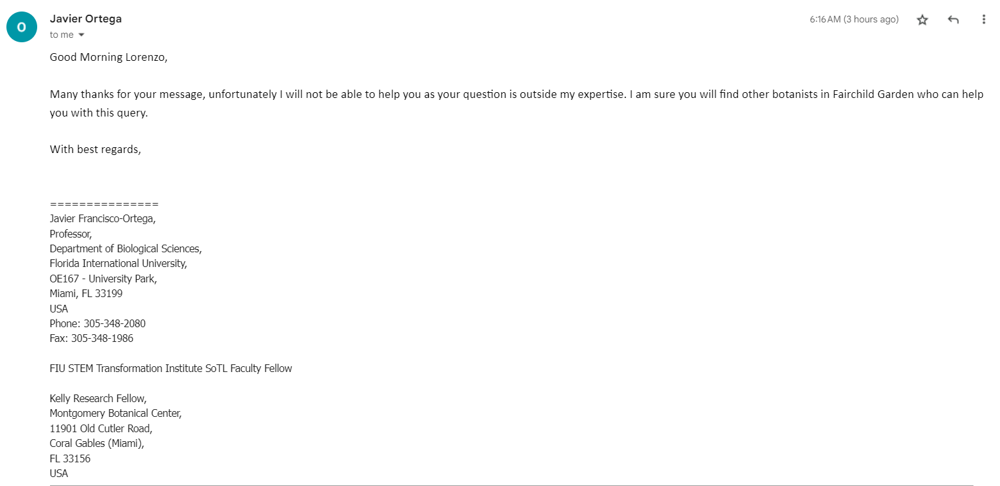

Market Research
To validate this project, it became necessary to first conduct research on different aspects of this project. I focused my research primarily on clinostats, finding academic papers through scholar.google.com. After finding my sources, I read trough them, summarized them, and added my own critique or notes to it. Here are the results of that research:
Paper 1:
The Physical Basis of Gravity Stimulus Nullification by Clinostat Rotation
This document explores how clinostat devices eliminate/reduce the effects of gravity on plant cells. These clinostat devices rotate plants around a horizontal axis. This rotation results in the particles within the plant cells following a quasi-circular path, which effectively nullifies gravity’s impact by keeping these particles near-stationary. This study also presents a method to calculate the optimal rotation rate that minimizes the effects of both gravity and centrifugal forces. This enables researchers to simulate microgravity environments and study plant growth within such an environment.
The authors also discuss the limitations of single-axis clinostats, especially for large plants and long-duration experiments, and propose multi-axis designs to overcome these challenges. They argue that most low-gravity biological responses can be studied using clinostats, reducing the need for expensive satellite-based experiments. This research is significant for space biology, providing a theoretical and practical foundation for simulating zero-gravity conditions in biological studies.
Citation: Dedolph, R. R., & Dipert, M. H. (1971). The physical basis of gravity stimulus nullification by clinostat rotation. Plant Physiology, 47(6), 756–764. https://doi.org/10.1104/pp.47.6.756
Academic Research
Finally,I tried reaching out to professionals for help or mentorship for this project. I first emailed Dr. Carl E Lewis, the director of Fairchild and one of the organizers of the Fairchild Growing Beyond Earth project. I reached out, letting him know that my team and I were the students at Belen Jesuit that were undertaking this project. I also asked him for guidance and let him know that any mentorship was welcome and appreciated.
I also emailed Dr. Javier Francisco-Ortega, a professor a professor at FIU in the Department of Biological Sciences. I saw his profile on Fairchild's research department page and noticed his extensive research on different species of tropical plants. I reached out to askif he would be able to help us in any way with finding different plant species that would thrive in a microgravity environment. Unfortunately, he responded by letting us know that this topic was outside of his expertise.
